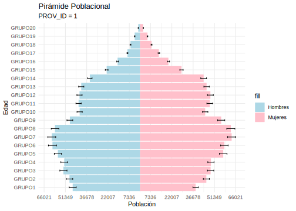
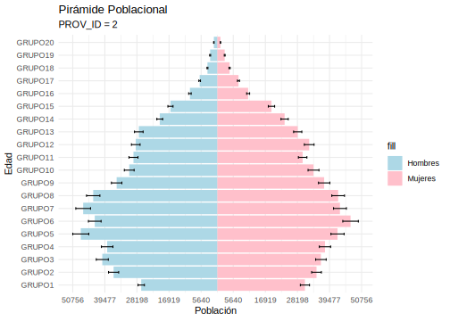
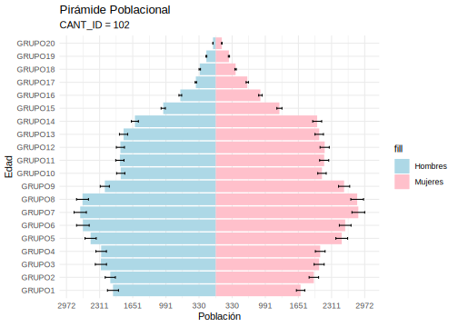

11.3 Predicción del total de personas por rango de edad y sexo
| grupo | total | SE | LimInf | LimSup | Len_IC |
|---|---|---|---|---|---|
| HOMBRES_GRUPO1 | 132715.613 | 3538.5296 | 126912.424 | 138518.801 | 11606.3771 |
| HOMBRES_GRUPO2 | 167537.132 | 4578.1619 | 160028.946 | 175045.318 | 15016.3711 |
| HOMBRES_GRUPO3 | 182328.109 | 5216.9996 | 173772.230 | 190883.989 | 17111.7587 |
| HOMBRES_GRUPO4 | 180165.851 | 5189.0721 | 171655.772 | 188675.929 | 17020.1564 |
| HOMBRES_GRUPO5 | 191782.430 | 5695.3272 | 182442.094 | 201122.767 | 18680.6731 |
| HOMBRES_GRUPO6 | 196681.972 | 5950.4734 | 186923.195 | 206440.748 | 19517.5529 |
| HOMBRES_GRUPO7 | 197411.070 | 5831.3041 | 187847.732 | 206974.409 | 19126.6774 |
| HOMBRES_GRUPO8 | 191008.448 | 5694.5553 | 181669.377 | 200347.519 | 18678.1415 |
| HOMBRES_GRUPO9 | 156522.833 | 4345.9776 | 149395.430 | 163650.236 | 14254.8066 |
| HOMBRES_GRUPO10 | 136569.728 | 3926.0488 | 130131.008 | 143008.448 | 12877.4402 |
| HOMBRES_GRUPO11 | 135995.420 | 3837.4780 | 129701.956 | 142288.884 | 12586.9279 |
| HOMBRES_GRUPO12 | 131888.989 | 3722.7379 | 125783.699 | 137994.279 | 12210.5804 |
| HOMBRES_GRUPO13 | 124940.164 | 3636.1568 | 118976.867 | 130903.461 | 11926.5942 |
| HOMBRES_GRUPO14 | 106462.067 | 3190.2168 | 101230.112 | 111694.023 | 10463.9111 |
| HOMBRES_GRUPO15 | 72514.563 | 2030.2378 | 69184.973 | 75844.153 | 6659.1799 |
| HOMBRES_GRUPO16 | 46304.067 | 1199.7564 | 44336.467 | 48271.668 | 3935.2009 |
| HOMBRES_GRUPO17 | 29636.441 | 776.7665 | 28362.544 | 30910.338 | 2547.7942 |
| HOMBRES_GRUPO18 | 17569.383 | 501.4791 | 16746.957 | 18391.809 | 1644.8513 |
| HOMBRES_GRUPO19 | 10052.158 | 364.0234 | 9455.160 | 10649.157 | 1193.9969 |
| HOMBRES_GRUPO20 | 5693.759 | 252.7038 | 5279.325 | 6108.193 | 828.8686 |
| MUJERES_GRUPO1 | 133932.122 | 3859.4112 | 127602.687 | 140261.556 | 12658.8686 |
| MUJERES_GRUPO2 | 159219.926 | 4341.0499 | 152100.604 | 166339.247 | 14238.6437 |
| MUJERES_GRUPO3 | 168190.704 | 4687.5265 | 160503.161 | 175878.247 | 15375.0868 |
| MUJERES_GRUPO4 | 170967.814 | 4858.5844 | 162999.736 | 178935.892 | 15936.1569 |
| MUJERES_GRUPO5 | 191028.640 | 5721.8012 | 181644.886 | 200412.394 | 18767.5078 |
| MUJERES_GRUPO6 | 196498.415 | 5882.7348 | 186850.730 | 206146.100 | 19295.3702 |
| MUJERES_GRUPO7 | 202199.447 | 5917.3901 | 192494.927 | 211903.966 | 19409.0394 |
| MUJERES_GRUPO8 | 202895.997 | 5970.9001 | 193103.721 | 212688.273 | 19584.5523 |
| MUJERES_GRUPO9 | 180427.823 | 5269.6683 | 171785.567 | 189070.079 | 17284.5122 |
| MUJERES_GRUPO10 | 148689.282 | 4216.8396 | 141773.665 | 155604.899 | 13831.2340 |
| MUJERES_GRUPO11 | 151500.141 | 4202.3081 | 144608.356 | 158391.927 | 13783.5705 |
| MUJERES_GRUPO12 | 150358.720 | 4204.6298 | 143463.127 | 157254.313 | 13791.1857 |
| MUJERES_GRUPO13 | 141620.661 | 4066.5684 | 134951.489 | 148289.833 | 13338.3444 |
| MUJERES_GRUPO14 | 119528.269 | 3458.0552 | 113857.058 | 125199.479 | 11342.4210 |
| MUJERES_GRUPO15 | 85609.538 | 2485.4344 | 81533.426 | 89685.650 | 8152.2249 |
| MUJERES_GRUPO16 | 54136.719 | 1433.8634 | 51785.183 | 56488.255 | 4703.0721 |
| MUJERES_GRUPO17 | 35611.090 | 934.7107 | 34078.165 | 37144.016 | 3065.8511 |
| MUJERES_GRUPO18 | 21527.179 | 582.6755 | 20571.591 | 22482.766 | 1911.1756 |
| MUJERES_GRUPO19 | 12157.783 | 374.7621 | 11543.173 | 12772.393 | 1229.2197 |
| MUJERES_GRUPO20 | 6679.249 | 260.7253 | 6251.659 | 7106.838 | 855.1791 |




